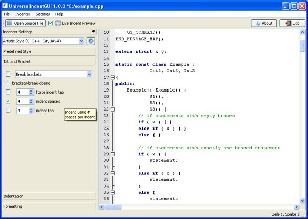
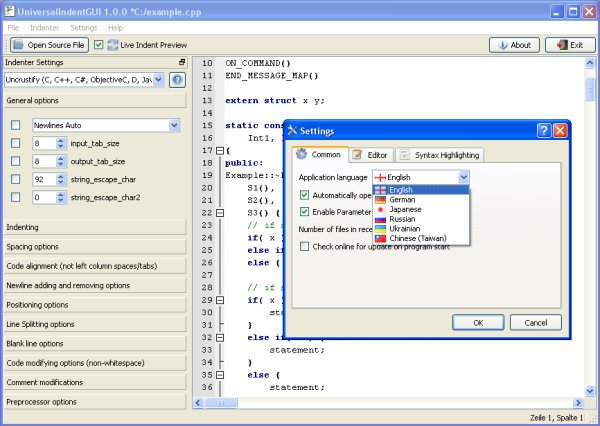

Ever concerned about how your code looks like?
Ever heard of different indenting styles, for example K&R?
Ever received code from someone else who didn't care about code formatting?
Ever tried to configure a code indenter to convert such code to your coding style?
Ever got bored by that tedious "changing a parameter"-"call the indeter"-"try and error" procedure?
Help is close to you. UniversalIndentGUI offers a live preview for setting the parameters of nearly any indenter.
You change the value of a parameter and directly see how your reformatted code will look like. Save your beauty looking
code or create an anywhere usable batch/shell script to reformat whole directories or just one file even out of the
editor of your choice that supports external tool calls.
Many free available code beautifier, formatter and indenter are currently supported, like GNU Indent, Uncrustify,
Artistic Styler, PHP Stylist, Ruby Beautify, HTML Tidy and many other (look at features for complete list).
Currently not supported indenters can be easyly added by creating a configuration file for them.
Thus UniversalIndentGUI is open for nearly any new indenter and programming languages. Give it a try.
Perhaps you'll also find an indenter for your programming language that you even didn't know that it exists.
Features
- Live Preview: change an indenter parameter and directly see how your formatted code will look like.
- Support for nearly any existing indenter possible. Currently supported are:

- Easy adding of new indenters: just create a parameter definition file for the new indenter.
- Load and save different indenter configurations.
- Reset to indenters default parameters.
- By the above named indenters currently supported programming languages:

- C, C++
- C#
- Cobol
- CSS
- D
- Fortran
- HTML
- Java
- JavaScript
- JSP
- Objective-C
- Pawn
- Perl
- PHP
- Pl/Sql
- Python
- Ruby
- Shellscript
- VALA
- Visual Basic
- XML
- XSL
- Syntax highlighting for all of these languages except for Pawn and VALA
- Really easy to handle user interface.
- Tooltips for each indenter parameter.
- Creation of batch/shell scripts.
- HTML and PDF export of your code.
- PortableMode and MultiUserMode: In portable mode only uses its own subdirectories for temporary writing.
- Multiple languages: English, German, Traditional Chinese, Russian, Ukrainian, partly Japanese.
- Drag'n Drop of source code files.
- Support for many different file encodings, like Korean KOI8-R or Chinese BIG5.
- Possibility to edit your code while live preview is turned on. Yeah, thats really live! (but positions cursor wrong sometimes depending on the used indenter :-( )
- Code completion.
- Automatic update check. Does check only once a day and can be disabled.
- A nice about dialog. Errrmm, ok beneath all the mean stuff this is somehow the programmers playground ;-)
Also a Notepad++ plugin version is available.
The programming project for that is currently only available as Visual Studio C++ 2005 project file.
Also this plugin has some problems with its event handling, because it is running as a DLL inside of Notepad++ event loop.
This will be replaced with the upcoming UiGUI server functionality. See future plans for more about that.
Supported and tested platforms
- Windows 32 bit
- Linux 32 and 64 bit
- Mac OS X >= 10.4 (currently Intel only. PPC produced mysterious linker error)
How to install / build UniversalIndentGUI
If you downloaded a complete binary package/archive for your system from SourceForge, you only need to unpack it and
can run it out of the box. Also all free available indenters for your platform are included. Doing it that way,
UiGUI will run in portable mode.
But if you'd like to build UiGUI from source, follow these steps:
- Download, unpack, configure and compile
Qt
>= 4.4.0. Make your QTDIR and QMAKESPEC settings. Or install Qt via a package manager.
- Download, unpack, compile and install
QScintilla
>= 2.2.
- Checkout UiGUI: svn co https://universalindent.svn.sourceforge.net/svnroot/universalindent/trunk universalindentgui
- In the checked out directory run "qmake UniversalIndentGUI.pro".
- Run "make release".
- Install it
-
Windows and Mac:
For testing on Windows/Mac download the indenter binary package from sourceforge and extract it into the
directory where you checked out the code (in the upper example that is "universalindentgui").
Then move the file "UniversalIndentGUI.exe" (on Mac the directory "UniversalIndentGUI") from the
"release" directory also to that directory. Starting UiGUI from this directory will run it
in portable mode.
-
Linux:
Run "sudo make install" installs for multi user mode. Install supported indenters via package manager for
example. For portable mode just skip "make install" and move the file "universalindentgui" from the "release"
directory into the directory where you checked out the code (in the upper example that is
"universalindentgui").
Indenter binary packages can be downloaded from the project at SourceForge
here.
Beneath the possibility to build UiGUI using qmake, also project files for Visual Studio 2005
and XCode are included.
Used Qt techniques
This list shows some selected functionalities that Qt offers and that I use with UiGUI.
- Translations are done with
QTranslator,
QLocale and Linguist.
- File encodings are supported by using
QTextCodec
and QTextStream.
- QScriptEngine
and QScriptValue
is included for executing JavaScript files used as indenters.
- QGraphicsView
and QGraphicsProxyWidget
for creating an animated 3D about dialog, simulating that is done on the whole desktop by using
the screenshot capability of Qt.
- Stylesheet settings give the about dialog a special look. Also gradients are used.
- QHttp
and QUrl
are used for the update check.
- QSettings
is responsible for storing the application and syntax highlighter settings.
- QTcpServer
and QTcpSocket
build the base for the UiGUI Server.
- Of course I use the Qt tools qmake, lupdate, lrelease, Designer, Linguist and my very best friend the Assistant.
Future plans
- Exchangeable source code view. Mainly adding a "Live Diff View" where you can see the unformatted
code and the formatted one side by side with changes highlighted.
- Bring functionality to the UiGUI server so that he can be run anywhere and a client plugin in any editor
like Eclipse or Notepad++ can communicate with it. Thus the client plugin can be written in any language
supporting TCP/IP connections and send to be formatted code to the server. Also some settings might be
made via that conncection. Plans are going on, so stay tuned.
- Batch/Multiple file and directory indenting, so that the user can throw a bunch of files or directories
into a list and click on "Do it", so they all will get formatted.
Thanks
Here I'd like to say "thank you" to all those guys, who helped me improving UiGUI. May it be doing some
translations, creating packages for Linux, letting me know about bugs or ways to improve or just saying
that they found my application helpful and that they like it. So:
Thank you all out there!!
Disclaimer
You may use this software on your own risk. I am not responsible for any system damage or loss of data.
Respect the GPL! UiGUI is being released under
GPL 2.
You will also find the license in the included file "LICENSE.GPL".